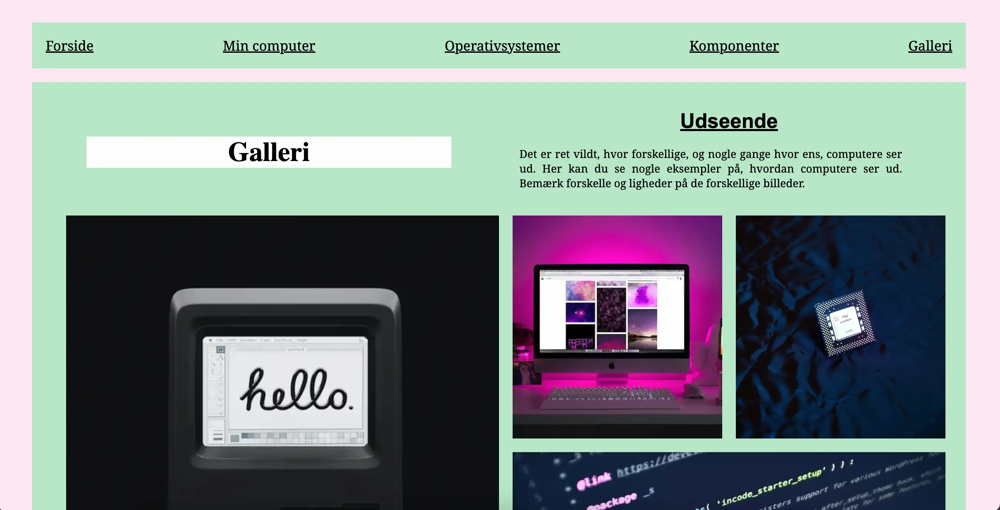
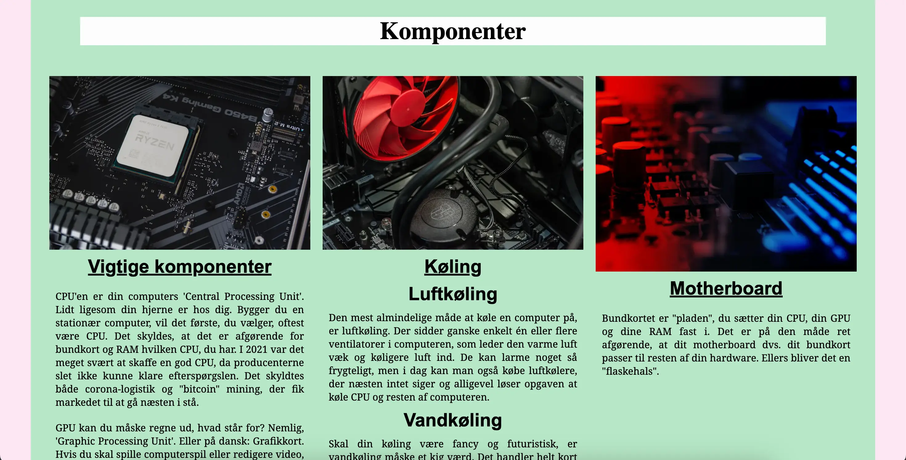
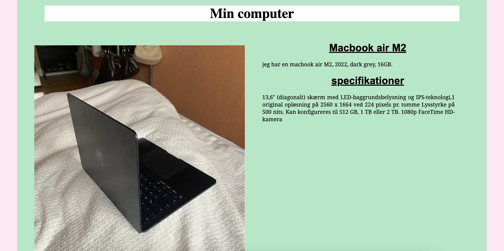
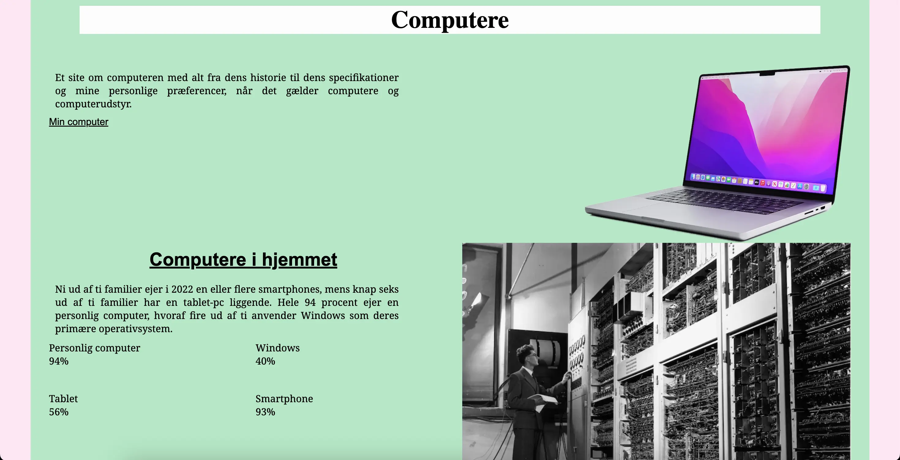
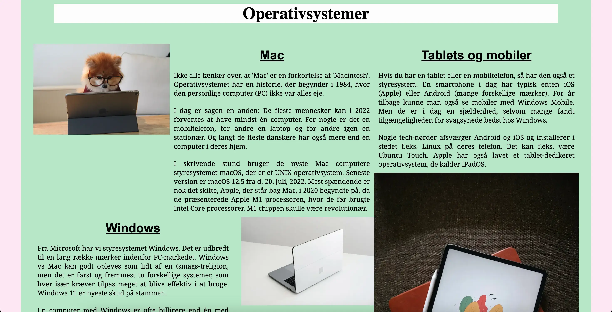

Grundlæggende
Web
Studiestartsprøven
Studiestartsprøven var vores første projekt. Her skulle vi ud fra givne layoutdiagrammer og wireframes lave et responsivt website. Vi skulle opsætte og strukturere nogle billeder og tekst på fem sider i HTML med fokus på semantisk markup. Samtidig skulle vi style og placere indholdet i CSS med fonte, farver, margin, padding og flexbox.





Konklusion
I slutningen af dette tema forstod jeg det grundlæggende i html og css, jeg lærte om hex farver og om media queries til at lave mobilversionen først.